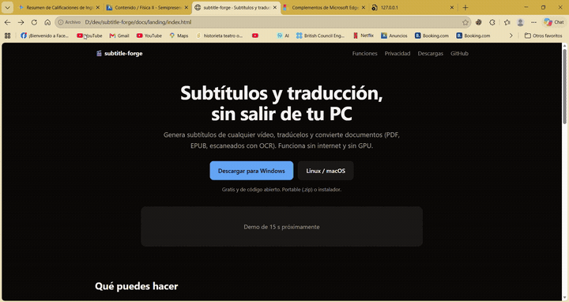

Subtítulos y traducción,
sin salir de tu PC
Genera subtítulos de cualquier vídeo, tradúcelos y convierte documentos (PDF, EPUB, escaneados con OCR). Funciona sin internet y sin GPU.
Gratis y de código abierto. Portable (.zip) o instalador.

Qué puedes hacer
Subtítulos automáticos
Transcribe cualquier vídeo o audio a .srt / .vtt con Whisper, detectando el idioma.
Traducción offline
Traduce los subtítulos a otro idioma con Argos Translate, sin enviar nada a ningún servidor.
Subtítulos incrustados
Quema los subtítulos en el vídeo y procesa carpetas enteras en lote.
PDF y EPUB
Traduce libros y artículos: PDF bilingüe (original en gris + traducción), EPUB o Markdown.
OCR para escaneados
¿PDF que es solo imágenes? --ocr reconoce el texto con Tesseract, en CPU.
Interfaz web y celular
Arrastra y suelta desde el navegador, o úsalo desde tu móvil por la red local con un código QR.
Manga (opcional)
Integración con un motor externo para traducir páginas de manga.
Para cualquier PC
CPU modesto, poca RAM y sin dependencias gigantes: los modelos se cargan de a uno.
Privacidad primero: nada sale de tu PC
Tu audio, tus vídeos y tus documentos se procesan en tu equipo y nunca se suben a ningún servidor.
- Sin nube, sin cuentas, sin telemetría. Esta página tampoco usa scripts de terceros ni rastreadores.
- La red solo se usa una vez, para descargar los modelos la primera vez que los necesitas.
- Después funciona 100 % sin conexión.
- La interfaz web escucha solo en tu equipo (127.0.0.1); el modo celular exige un token aleatorio.
Descargas
Portable (.zip)
Descomprime y ejecuta subforge.exe. Incluye ffmpeg y Tesseract. No instala nada.
Instalador de Windows
Instala en Program Files, crea accesos directos y un desinstalador.
Ir a ReleasesVersión full o lite
full: incluye traducción. lite: solo subtítulos, documentos y OCR (descarga más liviana).
Linux y macOS
git clone https://github.com/AgentRayx/Agent_Traductor.git
cd subforge
python3 -m venv .venv && source .venv/bin/activate
pip install -e ".[translate,ui,ocr]"
sudo apt install ffmpeg tesseract-ocr # macOS: brew install ffmpeg tesseract
subforge make video.mp4 --translate es